Plot Method for an Object of Class simstatespace
Source: R/simStateSpace-methods-simstatespace.R
plot.simstatespace.RdPlot Method for an Object of Class simstatespace
Usage
# S3 method for class 'simstatespace'
plot(
x,
id = NULL,
time = NULL,
eta = FALSE,
type = "b",
burnin = 0,
reset_time = TRUE,
...
)Arguments
- x
Object of class
simstatespace.- id
Numeric vector. Optional
idnumbers to plot. Ifid = NULL, plot all available data.- time
Numeric vector. Optional
timepoints to plot. Iftime = NULL, plot all available data.- eta
Logical. If
eta = TRUE, plot the latent variables. Ifeta = FALSE, plot the observed variables.- type
Character indicating the type of plotting; actually any of the types as in
plot.default().- burnin
Positive integer. Initial data points to discard. Default is zero.
- reset_time
Logical. Reset the time index after burnin.
- ...
Additional arguments.
Examples
# prepare parameters
set.seed(42)
## number of individuals
n <- 5
## time points
time <- 50
## dynamic structure
p <- 3
mu0 <- rep(x = 0, times = p)
sigma0 <- diag(p)
sigma0_l <- t(chol(sigma0))
alpha <- rep(x = 0, times = p)
beta <- 0.50 * diag(p)
psi <- diag(p)
psi_l <- t(chol(psi))
## measurement model
k <- 3
nu <- rep(x = 0, times = k)
lambda <- diag(k)
theta <- 0.50 * diag(k)
theta_l <- t(chol(theta))
## covariates
j <- 2
x <- lapply(
X = seq_len(n),
FUN = function(i) {
matrix(
data = stats::rnorm(n = time * j),
nrow = j,
ncol = time
)
}
)
gamma <- diag(x = 0.10, nrow = p, ncol = j)
kappa <- diag(x = 0.10, nrow = k, ncol = j)
# Type 0
ssm <- SimSSMFixed(
n = n,
time = time,
mu0 = mu0,
sigma0_l = sigma0_l,
alpha = alpha,
beta = beta,
psi_l = psi_l,
nu = nu,
lambda = lambda,
theta_l = theta_l,
type = 0
)
plot(ssm)
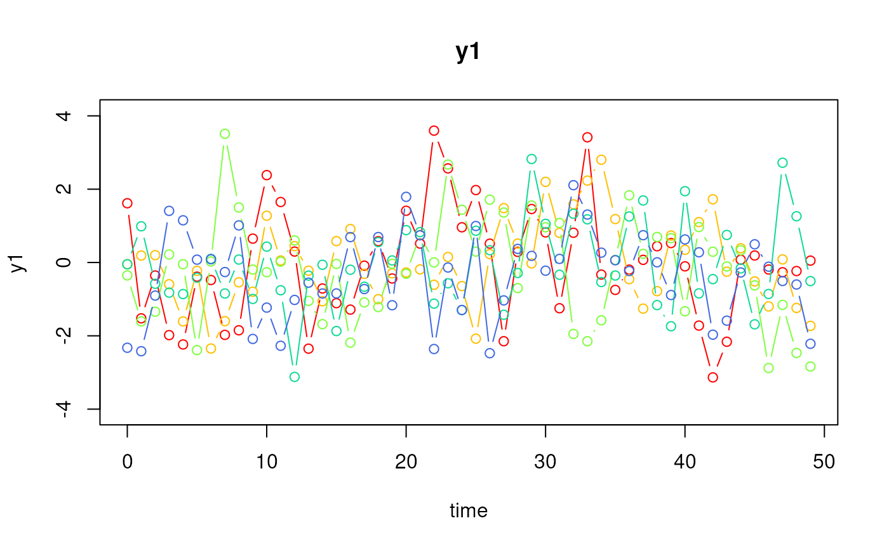
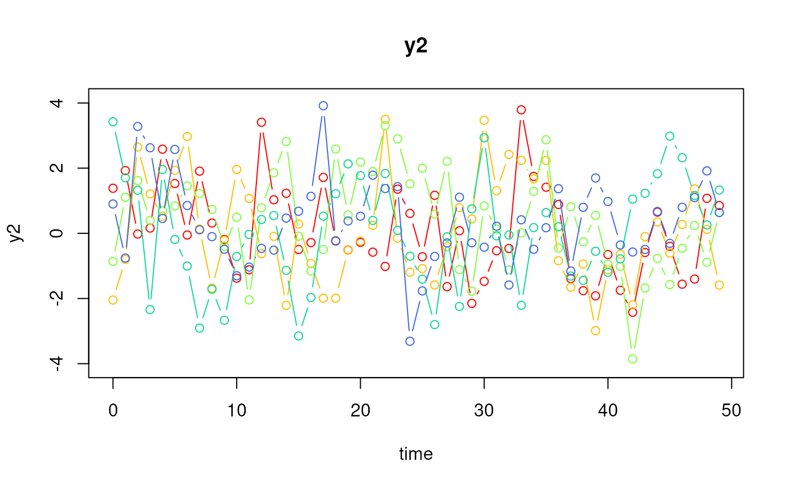
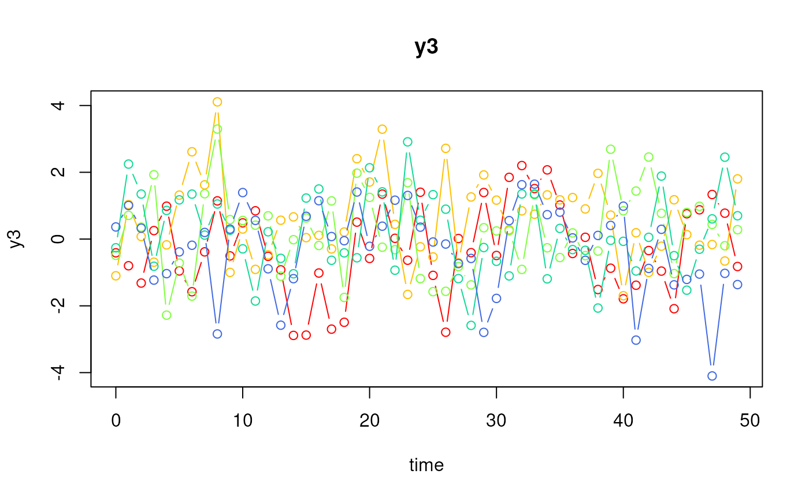
plot(ssm, id = 1:3, time = 0:9)
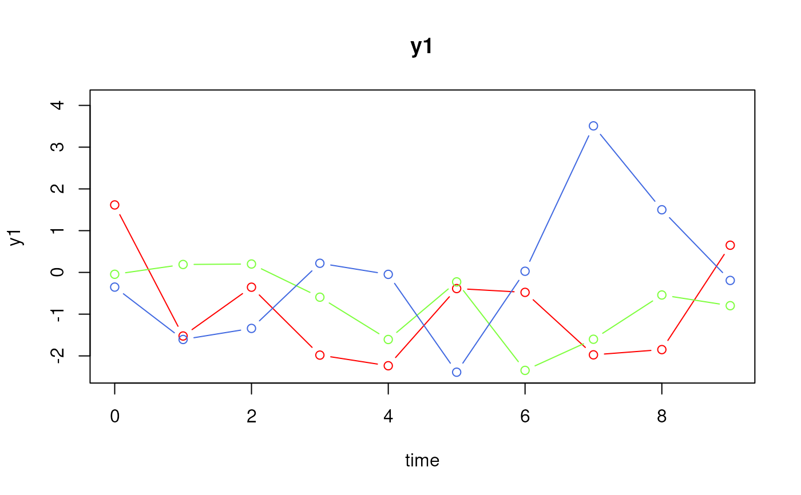
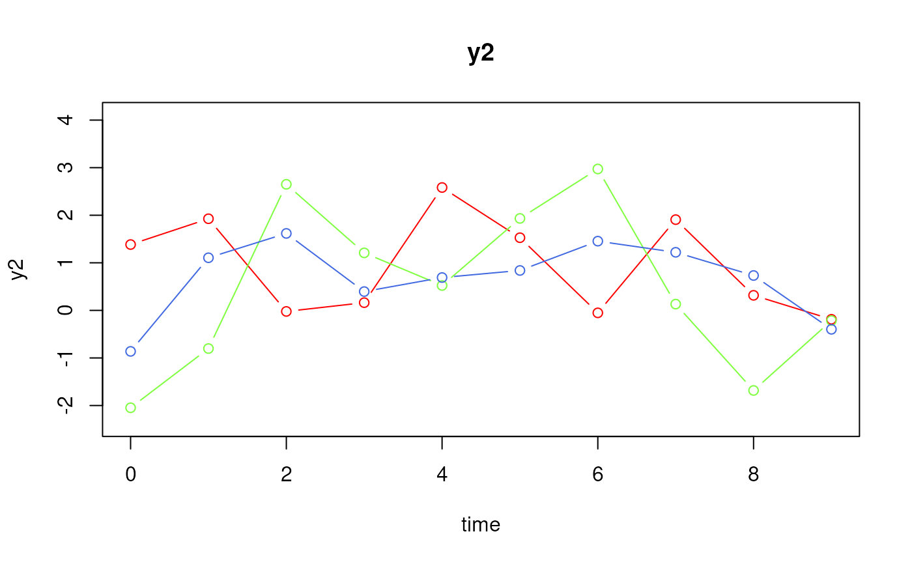
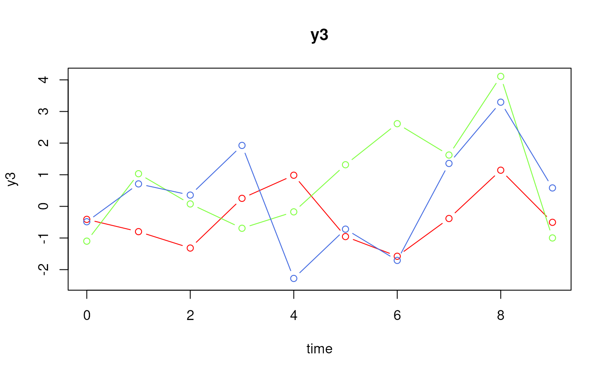
# Type 1
ssm <- SimSSMFixed(
n = n,
time = time,
mu0 = mu0,
sigma0_l = sigma0_l,
alpha = alpha,
beta = beta,
psi_l = psi_l,
nu = nu,
lambda = lambda,
theta_l = theta_l,
type = 1,
x = x,
gamma = gamma
)
plot(ssm)
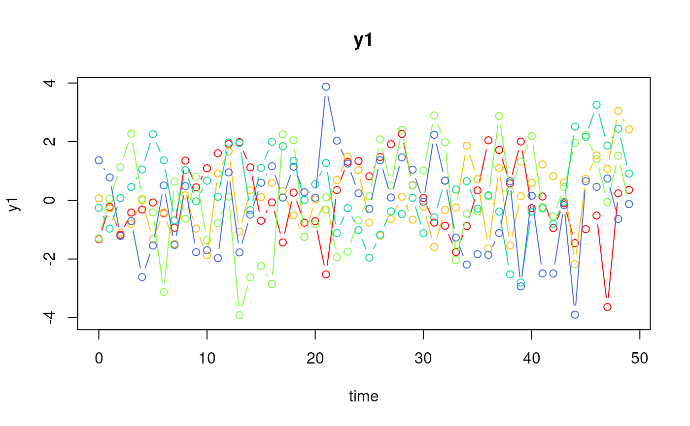
plot(ssm, id = 1:3, time = 0:9)
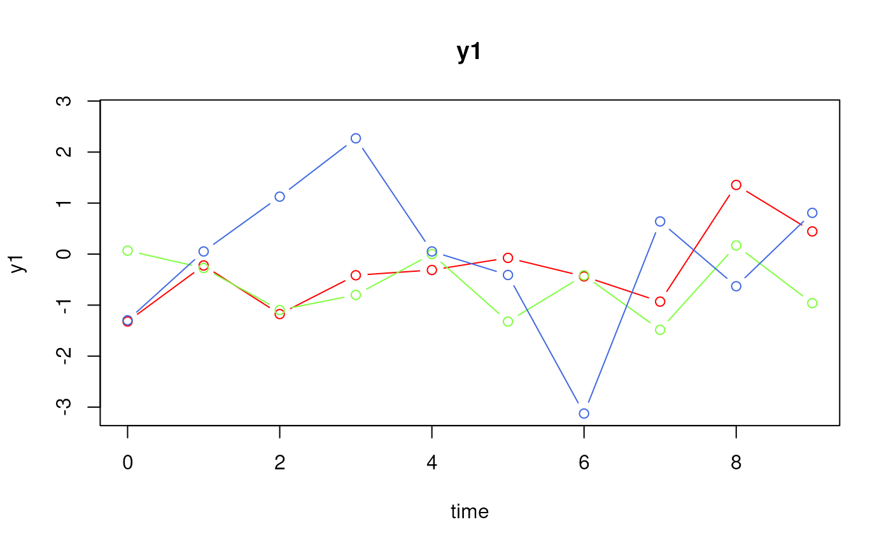
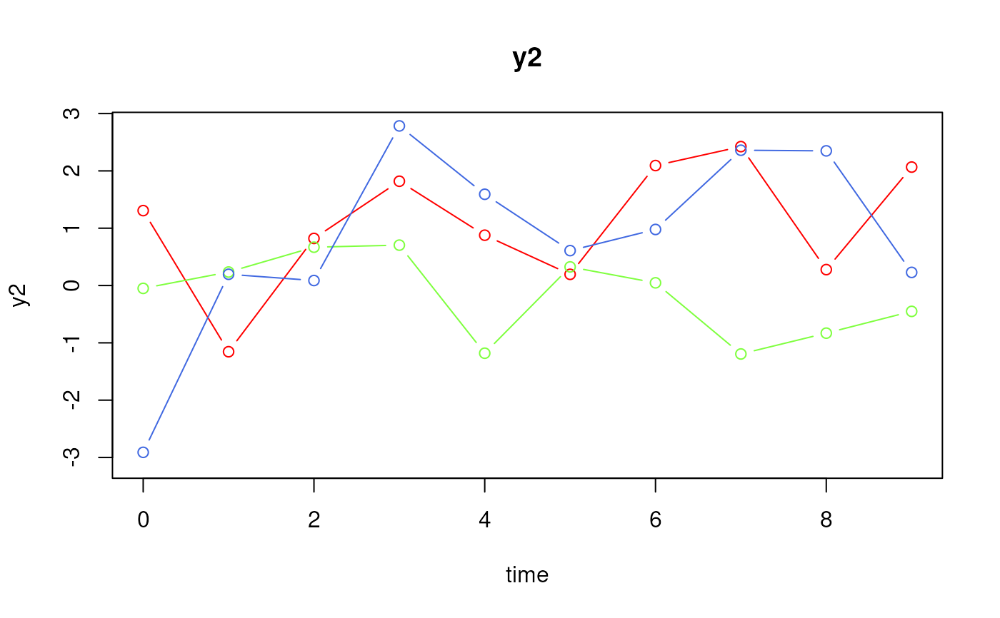
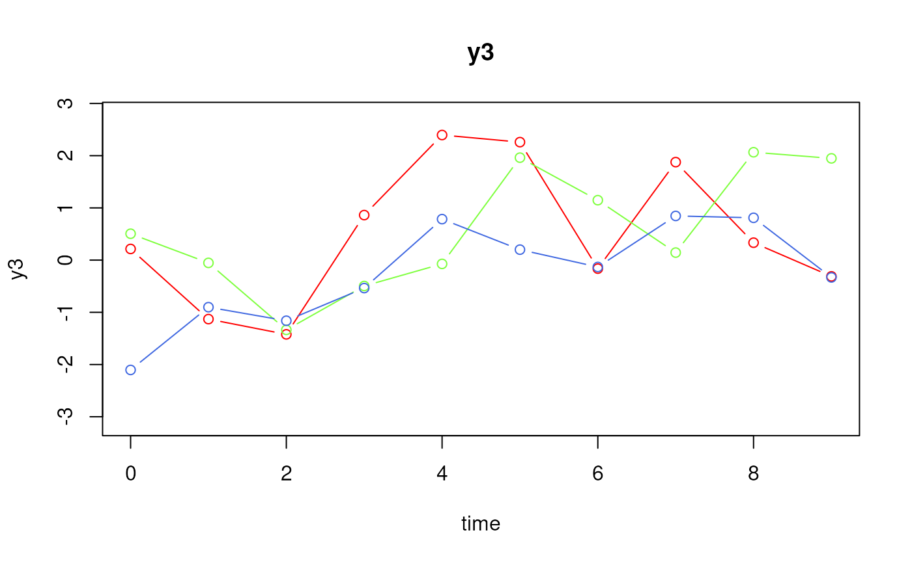
# Type 2
ssm <- SimSSMFixed(
n = n,
time = time,
mu0 = mu0,
sigma0_l = sigma0_l,
alpha = alpha,
beta = beta,
psi_l = psi_l,
nu = nu,
lambda = lambda,
theta_l = theta_l,
type = 2,
x = x,
gamma = gamma,
kappa = kappa
)
plot(ssm)
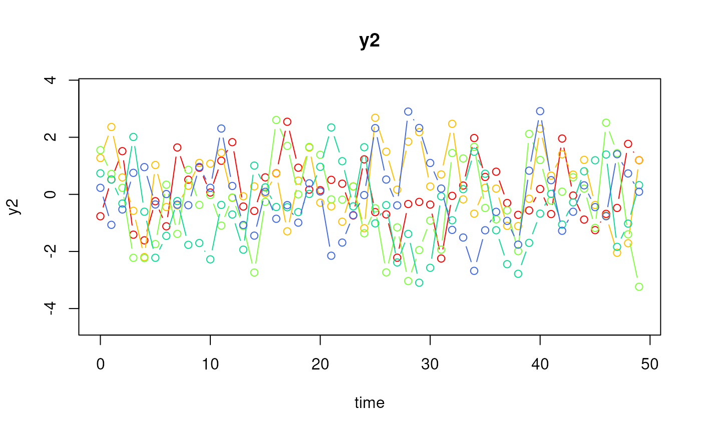
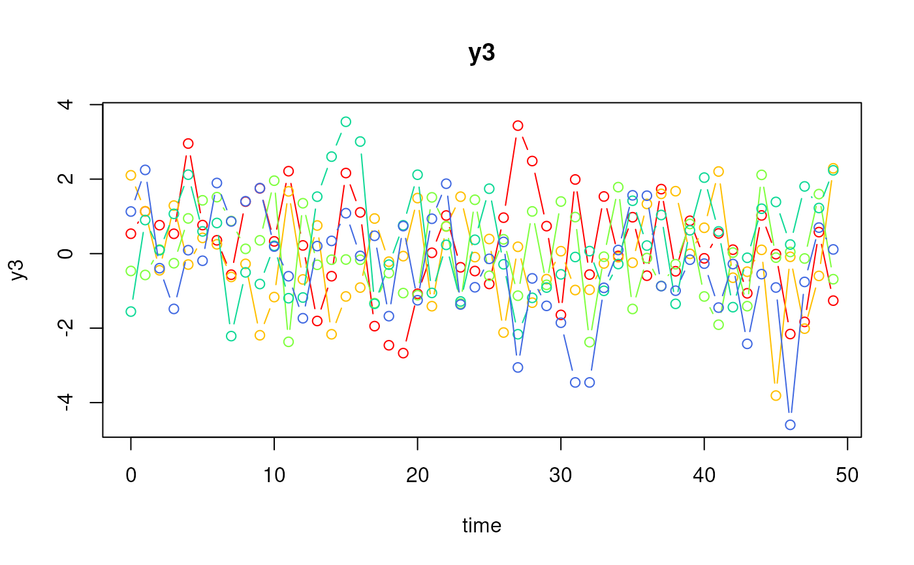
plot(ssm, id = 1:3, time = 0:9)
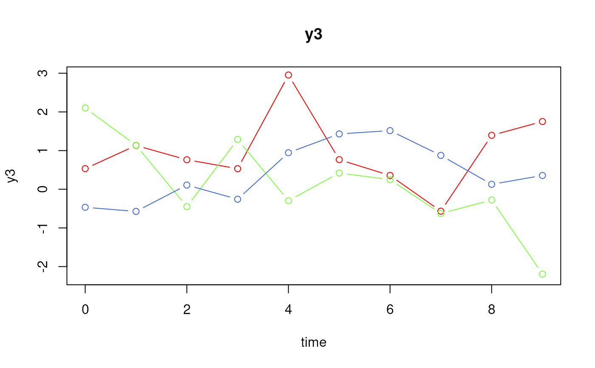